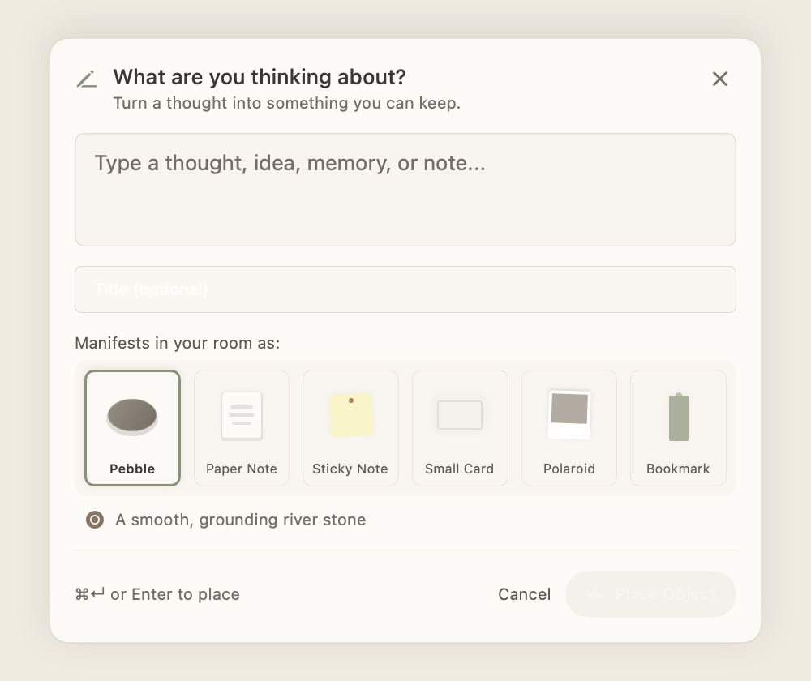
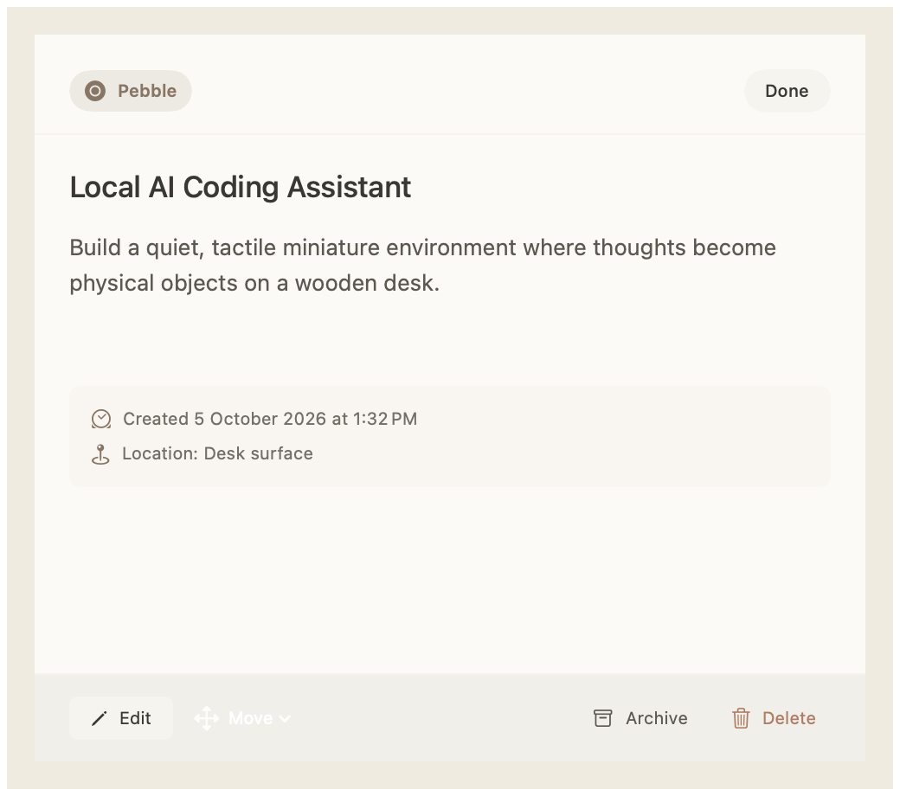

A tiny room for everything on your mind.
Turn thoughts, ideas, notes, and little moments into a place that feels like yours.
Your thoughts shouldn’t feel like files.
In standard productivity tools, ideas are rows in a database, nested markdown files, or cards on a board. Nook replaces endless hierarchies with physical tactile presence.
Spreadsheets & Databases
Rows, columns, tags, search queries, and nested subfolders. When you revisit them, they feel like work waiting to be audited.
A Living Miniature Room
Your thoughts become smooth river stones, folded cream parchment, buttery sticky notes, and Polaroid prints you can arrange, pick up, or look over.
Three simple steps.
Zero setup, no onboarding tutorial, no learning curve. The room teaches the product.
Capture
Press ⌘⇧Space from anywhere on your Mac. A floating piece of tactile paper appears over your desktop.

Choose
Pick the little object that represents what you’re thinking about. A smooth stone for a grounding idea, a warm paper note for reflections, or a Polaroid for a memory.
Keep
Your thought finds its physical place inside your room. Drag it across the desk surface, move it to the bookshelf, or inspect it with native macOS keyboard shortcuts.

Your thoughts stay on your Mac.
Nook has no backend server, no cloud database, no accounts, and no telemetry. Your ideas belong exclusively to you.
No Account Required
No sign-up form, no password, no email collection. Launch Nook and your room is already waiting.
Native SwiftData Storage
All thoughts, positions, and objects are persisted directly in macOS SwiftData SQLite storage on your hard drive.
100% Offline by Design
Works seamlessly on airplanes, remote trails, or disconnected cafes without asking for a Wi-Fi connection.
Zero Data Selling
There is no analytics tracker, no behavioral telemetry, and no ad network. We cannot read your thoughts even if we wanted to.
Nook is made for Mac.
Experience a miniature physical place for your thoughts. Free to download and use locally forever.